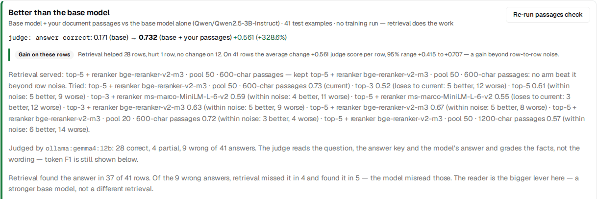

Documents → Q&A, and the check that runs before training
One background job goes from cleaned passages to question-answer pairs, an answer key, a split and a training run. Before it trains, it asks whether retrieval alone already does the job. Here is every stage and threshold.
"I have documents, I want a model that answers questions about them" is the most common request we get, and the one where fine-tuning most often loses. This flow exists to make that answer cheap to find out. It lives in backend/app/services/documents_qa_flow_service.py and runs as one background job you can watch in the bell.
The stages
- Passages. Your cleaned documents, cut on sentence boundaries. The flow needs at least 5.
- Pairs. For each passage a model writes question-answer pairs for training (3 per passage by default) and one different question for the answer key.
- Answer-key checks. A key question is dropped when it points at "this passage" instead of naming its subject, or when less than 70% of the answer's content words appear in the passage. The passage keeps its training pairs.
- Split with the default training sources, then the retrieval check (below).
- Train, unless the check says retrieval is ready. Fewer than 40 training pairs stops the flow before training.
- The usual lift check after training, against the same base model.
Generation saves each reply as it arrives. A flow killed halfway (we had one stopped for a machine restart) is re-posted with the same request and asks only for what is missing.
How it sizes itself
The flow starts from the comparison it has to make. To tell two systems apart when their judge scores differ by 0.15, with a per-row standard deviation of about 0.5, it needs about 45 paired test rows: ⌈(2 × 0.5 / 0.15)²⌉ = 45. At a 10% test share and 3 pairs per passage, that is 150 passages, taken evenly across the whole corpus in document order. Taking the first 150 instead, which an early version did, would have meant only the opening chapters. When the corpus is too small, the test share rises, up to 30%. On IRS Publication 17 this gave 405 training pairs, 324 / 40 / 41 after the split. For a tighter comparison you can lower the decision gap: 0.08 asks for 157 test rows, which is what our second Pub 17 attempt used.
The retrieval check
Before any training, the flow scores the base model on the test questions twice: once alone, once with passages retrieved from your documents in front of it. A judge grades both against the answer key (correct, partial, wrong), and the rows are paired. It also runs a retrieval sweep (number of passages, reranker, candidate pool, passage size), picks the best setting on the validation rows, and then scores that one setting once on test. The check never uses F1.
The result is one of three tiers (backend/app/services/passage_rag_verdict_service.py:303-306):
| Tier | Rule | What the flow does |
|---|---|---|
| Retrieval ready | Better than the bare base beyond noise, judge score ≥ 0.65, at least half correct, at most a quarter wrong | Stops before training and offers Reroute to RAG or Train anyway |
| Retrieval promising | Better beyond noise and score ≥ 0.4, but not ready | Trains, with a note to compare afterwards |
| Retrieval weak | Anything else | Trains |
If no judge is reachable the result is "not judged" and the flow does not pretend otherwise. These thresholds were set on a handful of our own runs with a local judge. Treat them as a starting point, not a law.

What happened when we trained anyway
On Pub 17 we pressed Train anyway to see the other side. Run #148 trained a 3B instruct model on 324 pairs for 243 steps, about 14 minutes on our GB10. The lift check then scored it on the same 41 questions with the same judge: base 0.20, fine-tuned 0.02, 9 rows worse and 2 better, interval −0.30 to −0.04. Its token F1 doubled over the same rows. The model had learned the publication's voice and lost facts it used to know. Results then showed the passages-vs-fine-tune verdict, which only declares retrieval the winner when both sides used the same judge and the same base model and the retrieval gain is beyond noise: passages 0.73, fine-tune 0.02. The full story is in the blog post.
Train anyway no longer re-runs the sweep. It re-uses the same split and goes straight to training, which saved about an hour on a 41-row split.
Training a reader instead
Retrieval misses and misreads are different failures. Of the nine wrong RAG answers on Pub 17, four were retrieval misses and five had the right passage and misread it. Reading can be taught. The flow has options for that. You can train with the retrieved passages in the prompt; with the pairs' own reference answers as targets, 20% of prompts have the answer passage withheld so the model learns to say the passages don't hold it. Our first reader trained that way (run #152) and learned it too well: it said "the passages don't say" on 35% of validation questions whose passage was right there. The option that worked uses a teacher model's answers to the same retrieved passages as targets, filtered by a judge, with an optional critique-and-revise round for answers the judge rejects; with teacher targets nothing is withheld artificially, and a teacher that finds no answer says so. With that, a 1.5B reader beat its base model reading the same passages, 0.688 against 0.570 on 157 questions, on all three seeds. The weakest seed cleared the bar by +0.067 with an interval of +0.003 to +0.131, so read it as a real but modest gain.
Who writes the questions
Any configured backend: a local Ollama model by default, a vLLM server or another self-hosted teacher endpoint, or a cloud model when you pin one and have saved its key. A cloud backend is never picked automatically. Its spend is metered per project, and a monthly budget, when you set one, is a hard stop (HTTP 402) rather than a warning. In our Pub 17 runs the choice of question writer mattered: an open-weight writer produced 292 answer-key questions that pointed at "this passage", which led to the question-repair step the flow has now. On the next attempt only 4 were thrown out. No documents yet? Data → Sources can have a model write sample seed documents first.
Run the flow
- Data → Sources → upload your PDFs or text. Data → Prepare → clean them (page furniture removal is on by default).
- Start the Documents → Q&A flow from its card on Train and leave the passages check on.
- Read the check on Results → Verdict before you decide anything. If it says ready, try Reroute to RAG first.